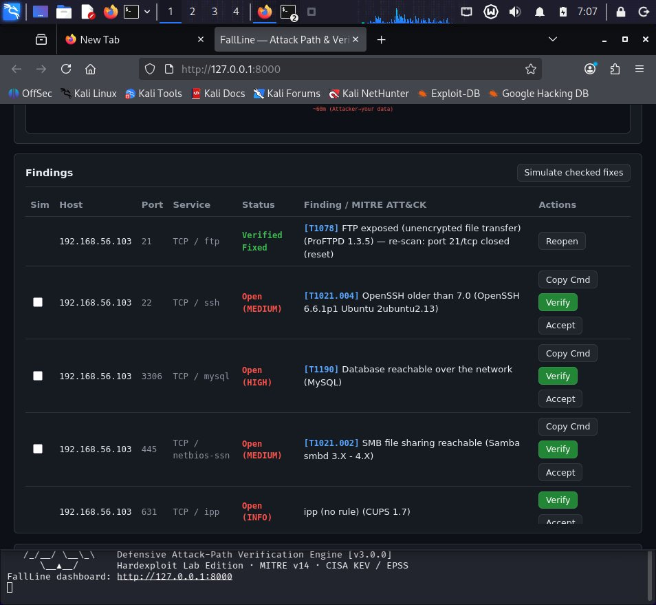
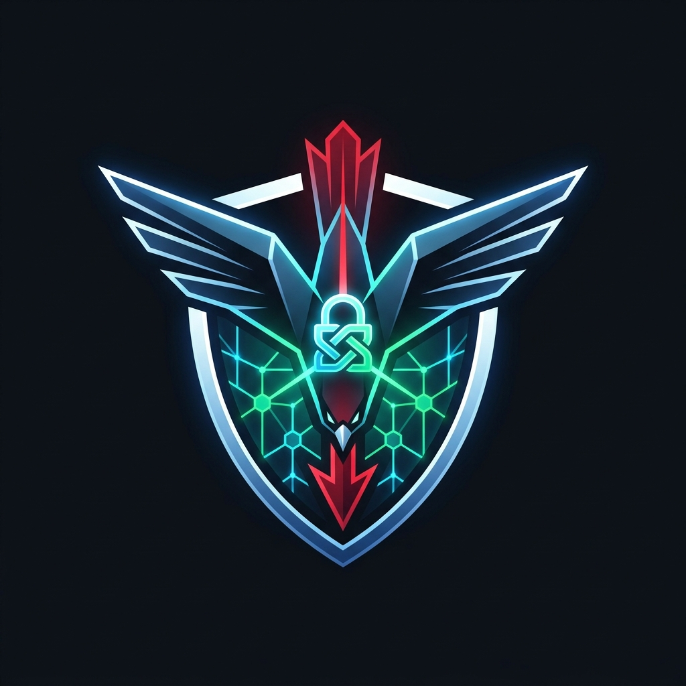

I don't just build passive dashboards. I engineer active defensive engines, attack-path graph algorithms, protocol-level proxies, and socket-level verification systems that solve security weaknesses on the wire.
A defensive vulnerability assessment and attack-path analysis engine that models systems as a domino run, calculates real Time-to-Compromise (TTC), ranks choke-point fixes, and verifies remediations by re-scanning only the fixed port.


Graph-Theoretic Attack Modeling & Real Re-Probe Loop
Uses NetworkX and Dijkstra's algorithm to compute the cheapest attacker path from entry to sensitive data, computing realistic Time-to-Compromise (TTC).
Scales attacker effort dynamically using real-time CISA Known Exploited Vulnerabilities (KEV) and FIRST EPSS exploit prediction metrics.
Never trusts a marked ticket. Sends a targeted TCP socket probe to re-verify the weakness is dead before awarding the green Verified Fixed status.
Enforces strict scope allowlists and requires cryptographic HTTP token or DNS TXT proof before permitting scans against public IP targets.
Explore my complete library of defensive protocol engines, active deception traps, AI auditors, and production platforms.
Test simulated commands in the interactive browser console. Type help, fallline, s3-shield, or scan.
Battle-tested methodologies and tooling applied across active virtualized lab environments and cloud infrastructure.
I am actively seeking remote cybersecurity opportunities (Vulnerability Management, Security Operations, Junior Penetration Testing) and freelance infrastructure security assessments.